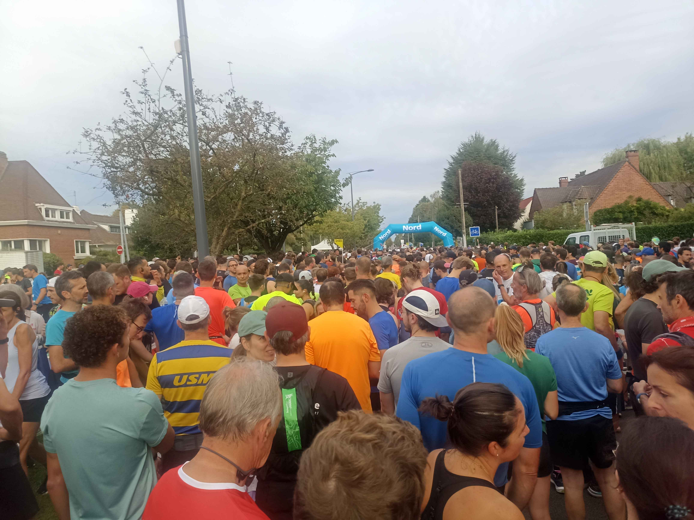

Semi de Marcq-en-Barœul - Semi-marathon - 22 sept. 2024
Marcq-en-Barœul
Niveau FFA : National
Statistiques sur 1 966 femmes et hommes classés (temps réel)
Résultats détaillés : voir
Le nombre de résultats présentés ici peut être légèrement inférieur au nombre réel de participants, car nous n'avons repris ici que les participants dont les données statistiques étaient complètes
Répartitions par catégorie
Catégories hommes
Catégories femmes
Répartition par sexe
| Juniors F | 3 | 0% | 2h 11'56'' | 20'27'' | 1h 49'43'' | 1h 58'22'' | 2h 07'01'' | 2h 39'06'' |
| Espoirs F | 21 | 1% | 2h 15'48'' | 19'41'' | 1h 23'47'' | 2h 06'16'' | 2h 17'40'' | 2h 29'19'' |
| Seniors F | 199 | 10% | 2h 09'04'' | 16'55'' | 1h 26'21'' | 1h 57'49'' | 2h 07'50'' | 2h 17'36'' |
| Master 0 F | 77 | 4% | 2h 06'41'' | 15'37'' | 1h 26'20'' | 1h 55'44'' | 2h 06'56'' | 2h 17'56'' |
| Master 1 F | 78 | 4% | 2h 09'23'' | 16'48'' | 1h 28'56'' | 1h 58'18'' | 2h 06'58'' | 2h 22'21'' |
| Master 2 F | 45 | 2% | 2h 05'47'' | 13'33'' | 1h 35'19'' | 1h 59'59'' | 2h 08'26'' | 2h 16'29'' |
| Master 3 F | 36 | 2% | 2h 13'31'' | 21'19'' | 1h 37'27'' | 1h 58'20'' | 2h 09'53'' | 2h 30'19'' |
| Master 4 F | 18 | 1% | 2h 13'28'' | 14'44'' | 1h 51'40'' | 2h 00'40'' | 2h 11'53'' | 2h 26'22'' |
| Master 5 F | 6 | 0% | 2h 17'07'' | 15'07'' | 1h 57'44'' | 2h 03'36'' | 2h 15'56'' | 2h 25'12'' |
| Master 6 F | 1 | 0% | 1h 54'35'' | 00'00'' | 1h 54'35'' | 1h 54'35'' | 1h 54'35'' | 1h 54'35'' |
| Master 7 F | 1 | 0% | 2h 34'58'' | 00'00'' | 2h 34'58'' | 2h 34'58'' | 2h 34'58'' | 2h 34'58'' |
| Juniors M | 18 | 1% | 1h 51'33'' | 18'05'' | 1h 30'51'' | 1h 38'20'' | 1h 46'48'' | 1h 54'39'' |
| Espoirs M | 81 | 4% | 1h 52'25'' | 13'56'' | 1h 24'20'' | 1h 43'24'' | 1h 50'26'' | 1h 58'22'' |
| Seniors M | 486 | 25% | 1h 52'18'' | 17'50'' | 1h 03'07'' | 1h 39'51'' | 1h 51'27'' | 2h 02'52'' |
| Master 0 M | 225 | 11% | 1h 53'29'' | 17'27'' | 1h 10'53'' | 1h 41'39'' | 1h 52'21'' | 2h 05'06'' |
| Master 1 M | 193 | 10% | 1h 48'48'' | 15'59'' | 1h 17'03'' | 1h 36'35'' | 1h 48'30'' | 1h 58'41'' |
| Master 2 M | 185 | 9% | 1h 56'59'' | 18'46'' | 1h 20'16'' | 1h 42'05'' | 1h 55'22'' | 2h 12'10'' |
| Master 3 M | 134 | 7% | 1h 59'41'' | 19'54'' | 1h 23'32'' | 1h 44'32'' | 1h 58'26'' | 2h 12'06'' |
| Master 4 M | 93 | 5% | 1h 58'26'' | 16'52'' | 1h 20'22'' | 1h 48'03'' | 1h 55'35'' | 2h 10'36'' |
| Master 5 M | 43 | 2% | 2h 00'48'' | 18'07'' | 1h 22'42'' | 1h 47'01'' | 1h 54'30'' | 2h 16'38'' |
| Master 6 M | 14 | 1% | 2h 00'46'' | 17'43'' | 1h 36'31'' | 1h 48'59'' | 1h 56'49'' | 2h 12'21'' |
| Master 7 M | 8 | 0% | 2h 15'26'' | 12'17'' | 1h 59'31'' | 2h 04'14'' | 2h 13'41'' | 2h 27'03'' |
| Master 8 M | 1 | 0% | 2h 11'13'' | 00'00'' | 2h 11'13'' | 2h 11'13'' | 2h 11'13'' | 2h 11'13'' |
| Total hommes | 1 481 | 75% | 1h 54'08'' | 18'00'' | 1h 03'07'' | 1h 41'28'' | 1h 52'51'' | 2h 05'58'' |
| Total femmes | 485 | 25% | 2h 09'22'' | 17'04'' | 1h 23'47'' | 1h 58'06'' | 2h 08'07'' | 2h 18'38'' | Catégorie | Nb | En % | Moyenne | Écart type | Temps du premier | 1er quartile | Médiane | 3ème quartile | Toutes catégories | 1 966 | 100% | 1h 57'53'' | 18'57'' | 1h 03'07'' | 1h 44'32'' | 1h 56'34'' | 2h 10'58'' |
|---|

Météo
Cette édition s'est tenue par une température entre 19° C et 22° C soit (+2 à +5° C) au dessus des normales. Le vent était modéré, 11 à 14km/h et rafales de 22 à 25 km/h.
Pas de SAS de départ
Le départ s'est effectué en masse, sans contrainte.
Des meneurs d'allures étaient présents
Comme on peut le voir sur la photo, il y avait des meneurs d'allures, 1 seul a le drapeau reconnaissable : 1h45.
Présences des licenciés FFA
Il y avait :
- 61 licenciée
- 221 licencié
Source : https://www.athle.fr/bases/statistiques-competition.aspx?frmcompetition=284839